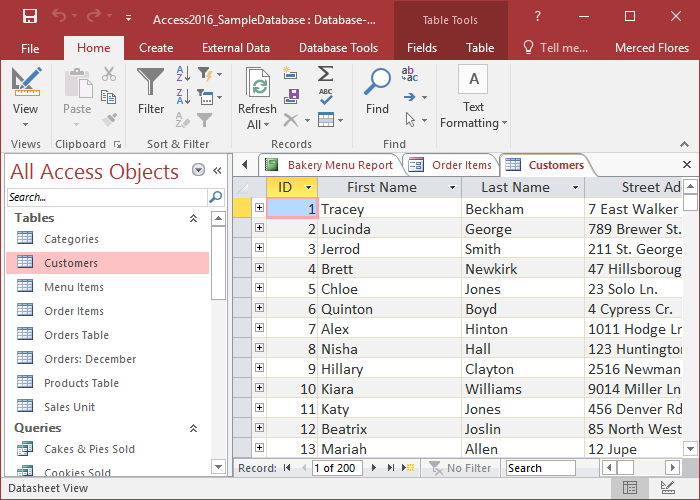

Як створити запит
Перш ніж почати, переконайтеся, що знаєте структуру своєї бази даних. Нижче наведено основні кроки для створення запиту:
- Виберіть таблицю або джерело даних.
- Сформулюйте умови запиту.
- Виконайте запит і перегляньте результати.
Запити дозволяють швидко знаходити інформацію та аналізувати її.
Приклад базового запиту
Цей приклад вибирає всі записи з таблиці "користувачі":
SELECT * FROM користувачі;
Щоб відфільтрувати дані, додайте умову:
SELECT * FROM користувачі WHERE вік > 18;
Відеоурок
Перегляньте короткий відеоурок, щоб побачити, як створюються запити:
Скріншоти
Приклад інтерфейсу роботи з базами даних:
Тестування запитів
Спробуйте створити власний SQL-запит у тестовій базі:
Поширені запитання
Що таке SQL-запит?
SQL-запит — це команда, яка дозволяє отримувати, додавати, змінювати або видаляти дані з бази даних.
Які основні запити використовуються?
Основні типи запитів: SELECT (вибірка даних), INSERT (додавання даних), UPDATE (оновлення), DELETE (видалення).